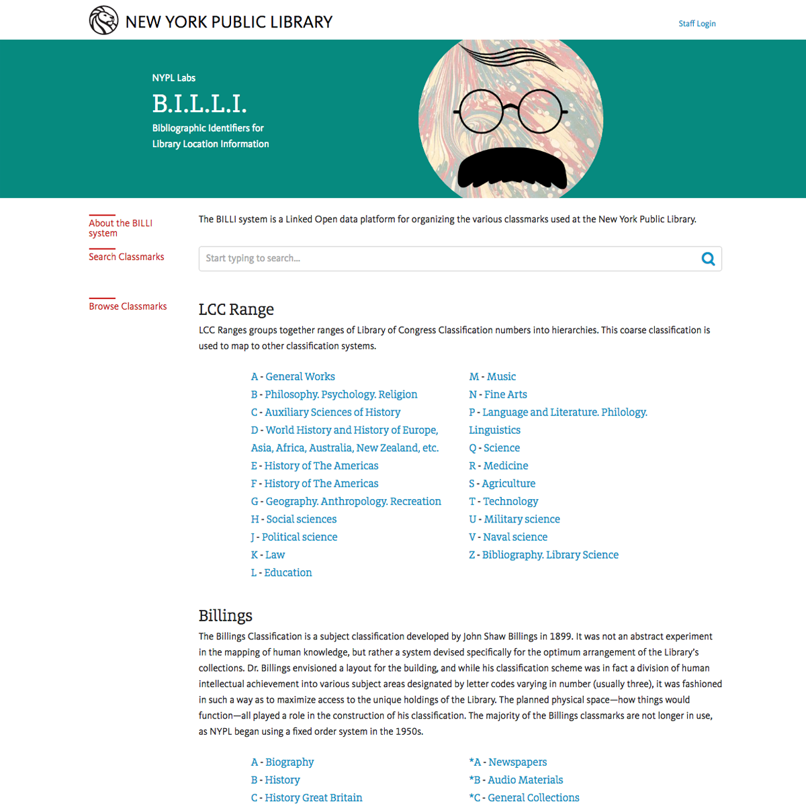
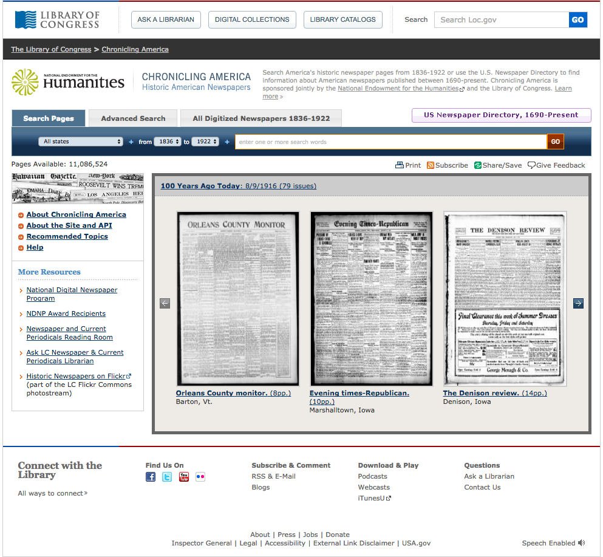
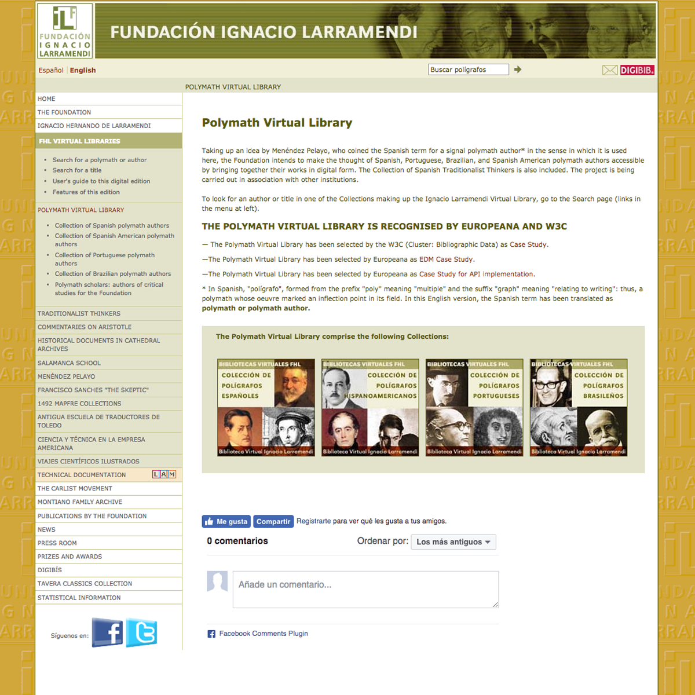
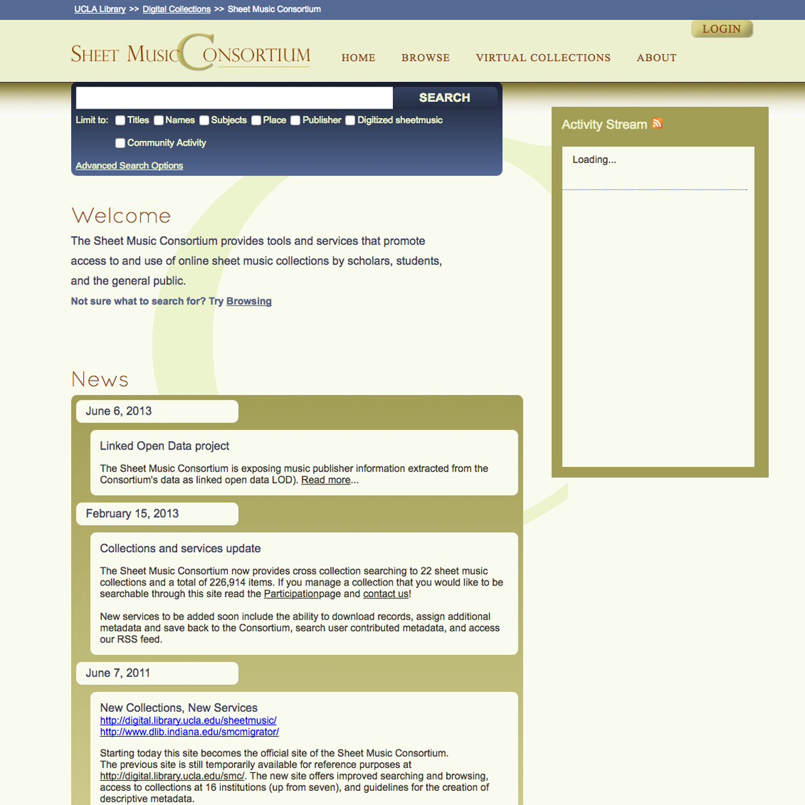
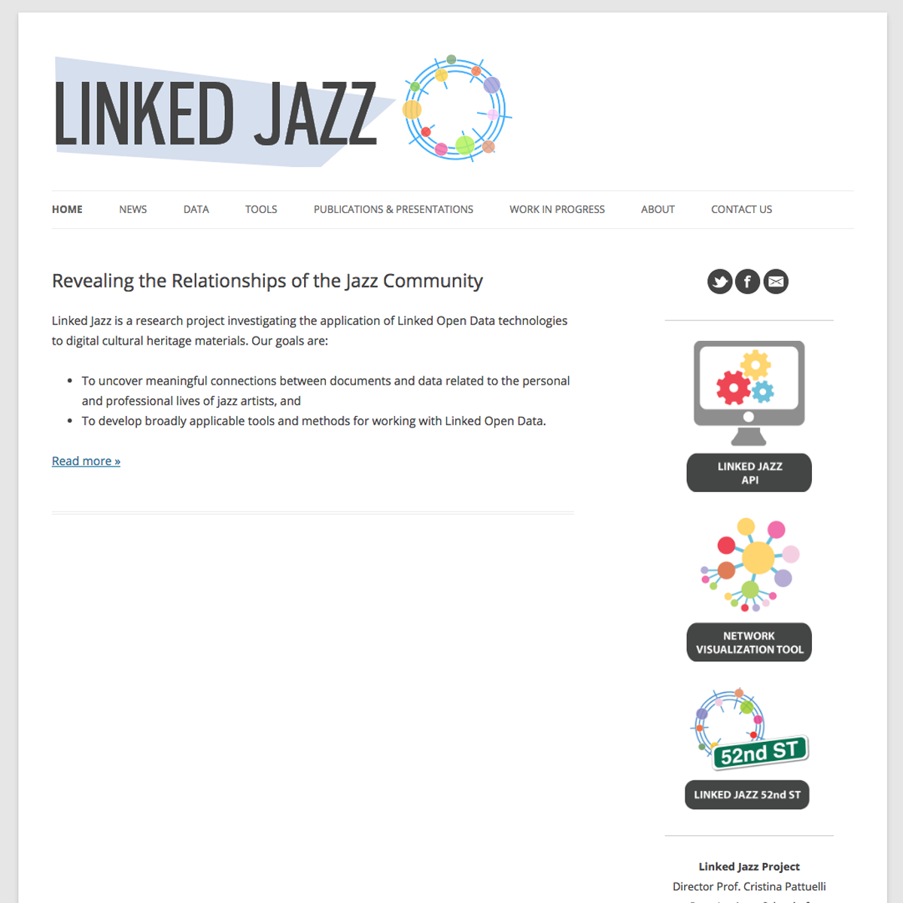
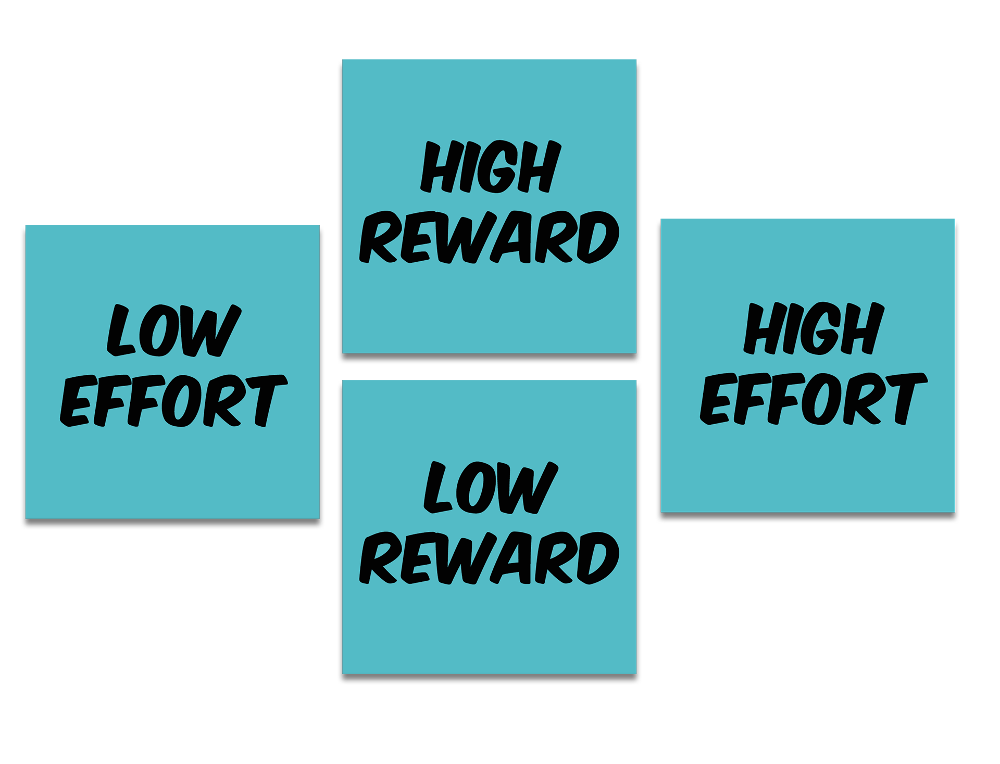
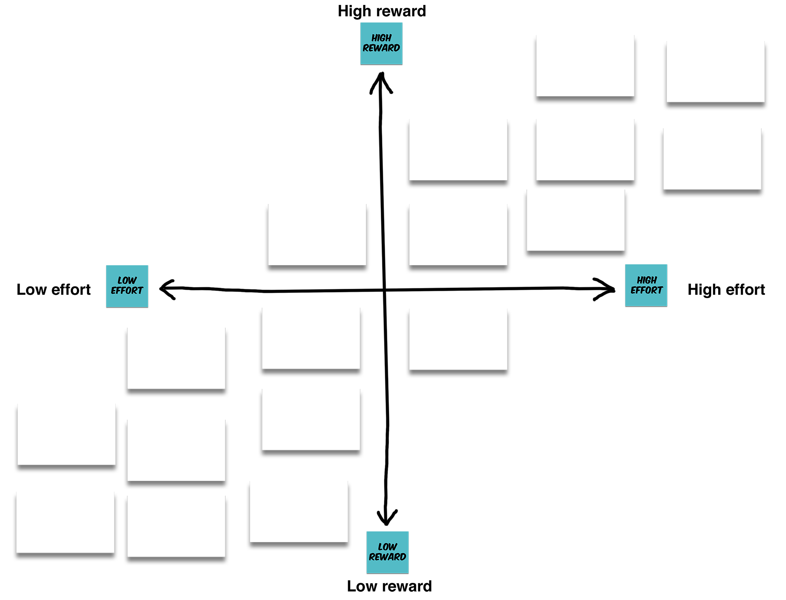

Linked Data
Brainstorming Session
John Jung / Kathy Zadrozny
Agenda
| 10:00-10:10 (10 min) |
Linked Data Environment |
| 10:10-10:50 (45 min) |
Generating Ideas |
| 10:50-11:25 (5 min) |
How to Evaluate Ideas Using Value and Effort |
| 10:50-11:25 (25 min) |
Value and Effort Plotting |
| 11:25-11:30 (5 min) |
Homework |
Current Linked Data Environment
- Internal Data Management
- Producing Linked Data
- Consuming Linked Data
- Collaborations with Other Institutions
- Serendipity
Internal Data Management
B.I.L.L.I. Bibliographic Identifiers for Library Location Information | New York Public Library
Crosswalk unique, homegrown subject heading systems to LC with linked data.

Internal Data Management
B.I.L.L.I. Bibliographic Identifiers for Library Location Information | New York Public Library
- Linked data helps them solve a local data problem.
- A website makes the data human-browsable.
- The dataset is available for others to interact with programmatically.
- NYPL promotes this project with blog posts, papers, and conference talks.
Producing Linked Data
Chronicling America | Library of Congress
Promoting linked data from newspapers for visualizations, mashups, and other projects.

Producing Linked Data
Chronicling America | Library of Congress
- Adding linked data is just one improvement to this project over many rounds of improvements.
- They promote the project and this data to developers and others.
- The website and people’s experiments with this data are prototypes that the library can use to inform future development.
Consuming Linked Data
Polymath Virtual Library | Fundación Ignacio Larramendi
Making a virtual collection and adding semantics and links to data from large data aggregators.

Consuming Linked Data
Polymath Virtual Library | Fundación Ignacio Larramendi
- Linked data project have a balance between data production and consumption.
- New relationships and links add value to large source data sets.
Collaborations with Other Institutions
Sheet Music Consortium | Collaboration Project
A collaboration across institutions adds linked data to its portal.

Collaborations with Other Institutions
Sheet Music Consortium | Collaboration Project
- A long term project, with several rounds of improvements.
- The collaboration started small and grew over years.
- This consortium specifically worked to publicize itself to potential collaborators.
Serendipity
Linked Jazz | Pratt School of Information Science
Aiming to reveal the relationships between people, organizations and places in the world of jazz with linked data.

Serendipity
Linked Jazz | Pratt School of Information Science
- This topic area seems especially well-suited to experiments with serendipity.
- They talk about reusable tools to describe relationships–jazz is just a starting point.
Generate Ideas
- Idea Name
- Description
- Target Audience(s)
- Responsible Department(s)
- Technically, how?
- Benefit / Why?
Generate Ideas
- Idea Name:
Speculum
- Description:
Transfer metadata into linked data for local data management
- Target Audience(s):
Graduate music dept.
- Responsible Department(s):
Music Bibliographer
- Technically, how:
RDF.
- Benefit / Why?
Encapsualted project to get our feet wet.
Potential Projects
- Chopin Early Editions
- Targeted Searches for Reference
- Connections between dissertations
- Middle Eastern Postcards
- Archival Photofiles
- American Environmental Photographs
- Speculum
- Manage Authorities (Local)
- Add linked data to University-produced video
- Add identifiers to bib records
- OLE/FOLIO engagement around Linked Data
- Serendipitous discovery in user interfaces
- Mint identifiers of local interest and publish
Brainstorming
End at 10:50
Outline Ideas
- Idea Name
- Description
- Target Audience(s)
- Responsible Department(s)
- Technically, how?
- Main Takeaway
Transform Ideas
- Local Management
- Producing Data
- Consuming Data
- Collaborating
- Discovering
Prioritize Ideas


Factors for Evaluation
- Organizational value (match with Library strategy)
- Technical value (reusability to other projects)
- Who is willing to commit?
- Is there already and ecosystem to plug into?
- How much can we reuse versus must create new?
Results
- Vote down to one project
- Make a priority list of projects
- Snapshot: High level view of project options
Homework
- Refine an idea you made today
- OR - Choose a new project from the list
- Generate ideas with deliverables
- Bring ideas to next meeting